概述
先说个我自己之前踩过的坑。
同一个路由下我同时放了 +page.server.js 和 +page.js。服务端那边明明 return 了 user 和 serverTime，页面上死活拿不到，data 里只剩 +page.js 自己新加的那几个字段。第一反应是服务端 load 没执行，打了半天日志，发现它跑得好好的。
后来才反应过来：+page.js 的 load 一旦存在，它的返回值就会把 +page.server.js 的数据整个替换掉，不会自动合并。
顺着这个坑往下挖，又牵扯出一堆容易想当然的地方：+page.js 是不是第一次服务端渲染不跑、水合才跑？它在浏览器返回的不可序列化数据，水合时会不会对不上？ssr = false 之后服务端还会不会执行 load？
这篇记录把这些问题捋一捋。有几处结论我一开始想错了，是翻了 @sveltejs/kit 源码才纠正过来的，文末一并记了。
一、执行时机
官方文档在 Loading data 里写得很清楚：
A
loadfunction in a+page.jsfile runs both on the server and in the browser (unless combined withexport const ssr = false, in which case it will only run in the browser).
以及：
By default, universal
loadfunctions run on the server during SSR when the user first visits your page. They will then run again during hydration, reusing any responses from fetch requests. All subsequent invocations of universalloadfunctions happen in the browser.
翻译成中文就是：
-
+page.js里的 universalload，第一次请求时就在服务端跑，不是等浏览器那次才跑。服务端跑完，用它的返回值渲染出 HTML。 -
浏览器拿到这份 HTML 之后开始水合，universal
load在浏览器里再跑一遍，产出浏览器环境下的数据。 -
之后所有的客户端导航，universal
load都只在浏览器跑。
+page.server.js 里的 server load 则是永远只在服务端跑，客户端导航时它依然要回服务端执行一次。
把三条路径对齐一下就是（默认配置，没关掉 SSR）：
| 场景 | +page.server.js 的 load |
+page.js 的 load |
|---|---|---|
首次 SSR 请求 |
服务端执行 |
服务端执行 |
浏览器水合 |
不重跑 |
浏览器再跑一遍 |
客户端导航 |
服务端执行 |
浏览器执行 |
一个容易搞混的点：ssr = false 到底意味着什么。
结论很干脆：运行时，服务端不执行任何 load 函数，只返回一个空的 “shell” 页面，所有 load 都到浏览器里才跑。源码 server/page/index.js 的注释写得很直白 —— “renders an empty ‘shell’ page if SSR is turned off and if there is no server data to prerender. As a result, the load functions and rendering only occur client-side”。
（注释里的 “and if there is no server data to prerender” 是个例外条件：prerender 构建期不算——即使 ssr = false，只要路由有 server load，构建时 SvelteKit 仍会执行它拿 server data。详见第七节第 3 条。）
不过这里要分清两件事：load 函数跑不跑，和 模块会不会被加载。如果你的页面选项不是静态字面量（比如 export const ssr = someCondition），SvelteKit 为了求值选项，仍然会在服务端 import 你的 +page.js。文档在 Page options 里提醒过：“browser-only code must not run when the module is loaded”。
所以模块顶层写 window 这类浏览器代码仍然是危险的 —— 但这是”模块被加载”的限制，不是”load 被执行”的限制，两回事。
二、两种 load 的输入和输出不一样
除了跑在哪，参数和返回值的要求也不同。
输入方面： server load 的参数是 ServerLoadEvent，多出 cookies、locals、request、getClientAddress、platform 这些只在服务端拿得到的东西。universal load 的参数是 LoadEvent，除了 params、url、route、fetch 这些公共部分，多了一个 data。
这个 data 就是两者协作的接口。文档的原话：
Universal
loadfunctions are called with aLoadEvent, which has adataproperty. If you haveloadfunctions in both+page.jsand+page.server.js…, the return value of the serverloadfunction is thedataproperty of the universalloadfunction’s argument.
输出方面：
A universal
loadfunction can return an object containing any values, including things like custom classes and component constructors.A server
loadfunction must return data that can be serialized with devalue — anything that can be represented as JSON plus things likeBigInt,Date,Map,SetandRegExp, or repeated/cyclical references.
一句话：server load 的返回值要能过 devalue 序列化（因为要跨网络送到浏览器），universal load 不受这个限制。
三、数据是怎么流的，…data 那个坑在这
官方文档在这块其实已经明说了，只是容易被忽略：
In rare cases, you might need to use both together … When using both, the server
loadreturn value is not passed directly to the page, but to the universalloadfunction (as thedataproperty).
也就是说：server load 的返回值不会绕过 universal load 直接给页面。 页面拿到的 data，永远是 universal load 的返回值；只有当你根本没写 +page.js 时，页面拿到的才是 server load 那份。
完整的数据
完整的数据流长这样（三条路径，注意每条路径发的请求不一样）：

两条请求的区别
| 请求 | 什么时候发 | 服务端跑什么 | 返回什么 |
|---|---|---|---|
|
首次访问、刷新、直接粘 URL |
server load + universal load |
完整 HTML |
|
客户端导航，且这条路由链（layout 或 page）有 server load 时才发 |
只跑 server load |
JSON，里面只有 server data |
两点补充
-
水合阶段一个请求都不发。server data 已经内联在 HTML 里，universal load 的
fetch响应也已经内联了。 -
如果这条路由链（layout 和 page）压根没有 server load，客户端导航时连
__data.json都不会请求 —— 浏览器直接跑自己的 universal load 就完事了。
于是就有个坑。假设我想要服务端给用户信息，同时再拉一份公开接口的帖子列表：
// +page.server.js
/** @type {import('./$types').PageServerLoad} */
export async function load({ cookies }) {
const user = await db.getUser(cookies.get('session'));
return {
user,
serverTime: new Date()
};
}// +page.js
/** @type {import('./$types').PageLoad} */
export async function load({ data, fetch }) {
const posts = await fetch('/api/posts').then((r) => r.json());
// 少写上面那行 ...data，则 user 和 serverTime 就全没了
return {
...data,
posts,
greeting: `你好，${data.user.name}`
};
}<!-- +page.svelte -->
<script>
/** @type {import('./$types').PageProps} */
let { data } = $props();
</script>
<h1>{data.greeting}</h1>
<p>服务器时间：{data.serverTime}</p>
<ul>
{#each data.posts as post (post.id)}
<li>{post.title}</li>
{/each}
</ul>这个坑隐蔽就隐蔽在它不报错。没有 …data 的时候，data.user 就是 undefined，页面只是少渲染点东西，控制台干干净净。
另外两个容易混的点：
-
布局和页面之间是会合并的，同名 key 后面的覆盖前面的。 文档的 NOTE 写得很明确：layout
load返回{ a: 1, b: 2 }、pageload返回{ b: 3, c: 4 }，最终是{ a: 1, b: 3, c: 4 }。 但这是「layout 与 page 之间」的事，跟「server 与 universal 在同一个节点里」完全是两回事 —— 后者不合并，是替换。 -
+layout.js/+layout.server.js跟 page 那对是同一个规则。 同一个 layout 目录下同时存在 universal 和 server load 时，也是 universal 的返回值替换 server 的，layout 自己也得写…data。 -
server load 总是先跑。 文档说得很直接："If a route contains both universal and server
loadfunctions, the serverloadruns first."
四、+page.js 为什么能返回不可序列化的东西
文档说 universal load 的返回值可以是任意值，包括类实例、组件构造函数。但它没解释为什么能。
答案在服务端渲染的数据流里：SSR 阶段只有 server load 的返回值会被 devalue 序列化、内联进 HTML；universal load 的返回值只用于渲染，不进 payload。浏览器水合时会再跑一遍 universal load，自己生成一份。
看 node_modules/@sveltejs/kit/src/runtime/server/page/index.js，服务端渲染时会准备两组数据：
// 只有 server load 的结果会进 payload
const server_data = await load_server_data({ ... });
if (node) {
data_serializer.add_node(i, server_data);
}
// universal load 的结果只用来渲染
const data = await load_data({ ... });
branch.push({ node, server_data, data });注意这两句注释不是互斥的：server load 的结果既进 payload（序列化内联）、又参与渲染——它会作为 data 参数喂给 universal load，最终变成页面 data；只有 universal load 的返回值是”只渲染、不进 payload”。
data_serializer.add_node() 走的是 devalue，产出的就是页面源码里那段 __++sveltekit_xxx 内联 JSON —— 里面只有 server data。而 universal load 的返回值（branch 里的 data）只在 render.js 里被合并成页面 props：
for (let i = 0; i < branch.length; i += 1) {
data = { ...data, ...branch[i].data };
props[`data_${i}`] = data;
}这里要分清「数据」和「渲染结果」。props 随后被喂给 options.root.render(props, …)，产出的是一段 HTML 字符串（render.js 里 let body = rendered.html），这段字符串确实作为响应发给了浏览器 —— 但它是用数据渲染出来的结果，不是数据本身。比如 data.greeting 变成了 <h1>你好，张三</h1>，浏览器看得见这段文字，却拿不到那个对象、更拿不到里面的函数引用。
水合时浏览器也不会从 HTML 里反序列化出 universal load 的返回值，而是自己再跑一遍 load 生成新数据，重新渲染一遍后跟服务端 HTML 做 DOM 对比。
也就是说，服务端那份不可序列化的值既没被序列化，也不需要送到浏览器；水合时浏览器重新执行 load，自己再生成一份。组件构造函数、类实例、函数都是这么过去的。
那返回不可序列化的数据，会报错吗?
不会。分开看三种情况：
一、嵌套的不可序列化值（组件构造函数、类实例、函数）—— 完全正常。
// +page.js
export async function load() {
return {
component: (await import('./Cool.svelte')).default, // 嵌套值，随便放
createdAt: new Date() // Date 也没问题
};
}服务端拿到的这份数据是直接喂给 render() 渲染的，中间没有 devalue 这一步，所以不存在”序列化失败”。浏览器水合时重跑一遍 load，自己再生成一份。
二、顶层不是普通对象 —— 会报错，但跟序列化无关。
src/runtime/shared.js 里的 validate_load_response 校验的是”顶层必须是普通对象”：
export function validate_load_response(data, location_description) {
if (data != null && Object.getPrototypeOf(data) !== Object.prototype) {
throw new Error(
`a load function ${location_description} returned ${
typeof data !== 'object' ? `a ${typeof data}` : 'a non-plain object'
}, but must return a plain object at the top level (i.e. \`return {...}\`)`
);
}
}所以 return new MyClass() 会炸，return { instance: new MyClass() } 没事。而且这个校验只在 DEV 下跑（if (DEV) validate_load_response(…)），生产构建不拦。
三、把服务端数据和不可序列化值混在一个对象里返回 —— 也不报错。
// +page.js
export async function load({ data }) {
return {
...data, // 服务端来的，已经过 devalue
component: Ctor // 不可序列化
};
}因为整个 universal load 的返回值都不进 payload，压根没人去序列化它。
真正会报错的是反过来的情况：不可序列化值放在 +page.server.js 里。
// +page.server.js
export async function load() {
return { instance: new MyClass() }; // ← 这里抛错
}server load 的返回值要过 devalue，失败时 SvelteKit 会把错误包装成一句人话：
Data returned from
loadwhile rendering /xxx is not serializable: … (path). If you need to serialize/deserialize custom types, use transport hooks: https://svelte.dev/docs/kit/hooks#transport.
如果确实需要传自定义类型，就上 transport hooks 让它可序列化。
怎么自己验证：打开页面源代码，搜 __sveltekit_xxx 那段内联 JSON，里面只有 server load 的数据；universal load 返回的东西不在里面。你也可以在 +page.js 里 return { fn: () ⇒ {} }，页面照常渲染 —— 这本身就是最直接的证据。
那浏览器水合时靠什么拿到 universal load 的数据？靠再跑一遍。客户端 client.js 的 _hydrate 会调 load_node，里面直接执行 node.universal.load：
data = (await node.universal.load.call(null, load_input)) ?? null;所以准确的说法是：
universal load 的返回值不会被送到浏览器，浏览器也不需要它。SSR 那次执行的产物只用于生成 HTML，水合时浏览器自己重新跑一遍，产出自己那一份。
这就解释了两件事：
-
为什么能返回组件构造函数、类实例、函数。 服务端那份压根没被序列化，不存在”序列化失败”；浏览器那份是重新 import / 重新构造出来的，本来就不是同一个对象，也就不存在”服务端有客户端没有”的断层。
-
为什么
fetch不会重复发请求。 响应是在 SSR 期间被捕获、内联进 HTML 的（<script type="application/json" data-sveltekit-fetched>），水合时浏览器从 HTML 里读。文档原话：“During hydration, the response will be read from the HTML, guaranteeing consistency and preventing an additional network request.”
顺带一提，这条也解释了 SvelteKit 官方教程里那个”服务端决定用哪个组件”的例子为什么能跑：
// +page.js
/** @type {import('./$types').PageLoad} */
export async function load({ data }) {
const module = data.cool
? await import('./CoolComponent.svelte')
: await import('./BoringComponent.svelte');
return {
component: module.default, // 组件构造函数：不可序列化，但放这儿完全没问题
message: data.message
};
}<!-- +page.svelte -->
<script>
/** @type {import('./$types').PageProps} */
let { data } = $props();
const Component = $derived(data.component);
</script>
<Component />注意这里的 data.cool 来自 server load —— 它是要被序列化的，所以只能是布尔这种普通值。
五、那水合不匹配到底哪来的
先排除一个误解：+page.js 返回组件构造函数、函数这类不可序列化的值，本身不会导致水合不匹配。因为它的返回值压根不序列化、也不送浏览器——水合根本不碰”序列化”这件事。
水合比的是两端渲染出的 DOM 是否一致。服务端渲染了一份 HTML，浏览器水合时拿着自己那份数据重新渲染，产出的 HTML 结构和属性得跟服务端那份对得上，对不上就会报 hydration_mismatch。
既然浏览器那份数据是自己算出来的，那不一致的来源就很清楚了：同一个 load 逻辑，在 Node 里和浏览器里算出了不同的结果。
常见的翻车写法：
// +page.js —— 这些在 SSR 阶段全是坑
export async function load() {
return {
theme: localStorage.getItem('theme'), // 服务端没有 localStorage
width: window.innerWidth, // 服务端没有 window
id: Math.random(), // 两端必然不同
isMobile: navigator.userAgent.includes('M') // 服务端没有 navigator
};
}注意这里是两类问题：theme / width / isMobile 这三个字段，值都来自浏览器专属 API（localStorage / window / navigator），而服务端没有这些 API；id: Math.random() 是另一类，两端都有这个函数、但每次结果必然不同（非确定性）。下面只讲前一类怎么处理。
这些代码在纯客户端导航时一切正常，只有”SSR 首屏 + 水合”这条路径会暴露出来。
我的处理方式是把浏览器专属的部分从 load 里挪出去，放到组件的 onMount 里读——load 在两端都要跑，别碰 localStorage / window / navigator；onMount 只在浏览器执行，等组件挂载后再补：
// +page.js —— 浏览器专属的值（isMobile）不放这里了
export async function load() {
// isMobile 挪到组件的 onMount 里读
}<!-- +page.svelte -->
<script>
import { onMount } from 'svelte';
let isMobile = $state(false);
onMount(() => {
// onMount 只在浏览器执行，SSR 阶段不会跑
isMobile = navigator.userAgent.includes('M');
});
</script>
<main class={{ mobile: isMobile }}>
<p>{isMobile ? '移动端' : '桌面端'}</p>
</main>注意这里的 isMobile 是组件内部的 $state，不是 load 返回的数据，跟 server load / universal load 都无关。所谓”SSR 渲染”指的是组件在服务端被渲染成 HTML 的那一刻——那时 isMobile 取初始值 false（onMount 不在服务端跑，读不到 navigator）；水合首屏也是 false，两端对得上；onMount 挂载之后才把它改成真实值，不会触发不匹配。
判断标准其实就一句：这段 load 逻辑在 Node 和浏览器里跑出来的结果是否一致。
六、几条容易被忽略的官方细节
universal load 不要返回 promise。 文档的 NOTE 写着：“You should avoid returning promises from a universal load function if the page is server rendered, as these are not streamed — instead, the promise is recreated when the function reruns in the browser.”
所谓”流式”，是 server load 可以返回一个没 await 的 promise（return { posts: fetch('/api/posts').then(r ⇒ r.json()) }），SvelteKit 先发页面骨架、promise 兑现后再把数据填进去。这条能力只属于 server load，因为它的数据真跨网络；universal load 的返回值不跨网络，服务端那个 promise 的结果浏览器拿不到，水合重跑 load 时 promise 被重新创建、再等一次，既不流式还白等。所以想流式，得用 server load。
layout 的 universal load 不是每次请求都跑。 客户端导航到子路由时，父级 layout 的 universal load 不会在浏览器端重新执行，除非它依赖的 params / url 变了，或者它被 invalidate / refreshAll 命中。
浏览器端的 universal load 按依赖决定要不要重跑。 访问了 params.slug，那 slug 变了它才重跑；访问了 url.searchParams.get('x')，只有 x 变了才重跑。refreshAll() 才是”全给我重跑一遍”。
data 在 Svelte 5 里用 $props() 接。 export let data 是 Svelte 4 的写法了，现在官方模板长这样：
<script>
/** @type {import('./$types').PageProps} */
let { data } = $props();
</script>类型直接用 SvelteKit 生成的 $types，PageProps / LayoutProps 都在里面。
七、官方文档没直说的几件事
下面这几条，文档里要么一个字没提，要么藏在某个 NOTE 后面。我是翻源码才确认的，列在这儿省得再去翻一遍。
1. universal load 的返回值压根不进 HTML payload。
文档只说 “A universal load function can return an object containing any values”，但没说为什么可以这么干。真相是：SSR 阶段只有 server_data 会进 data_serializer，universal load 的返回值只喂给 render()，最后浏览器水合时会自己重跑一遍，重新算一份数据，拿去和 SSR 的 HTML 对账。
2. universal load 的返回值顶层必须是普通对象 —— 这条文档里一个字都没有。
源码 src/runtime/shared.js 的 validate_load_response 会拦：
export function validate_load_response(data, location_description) {
// !== 普通对象
if (data != null && Object.getPrototypeOf(data) !== Object.prototype) {
throw new Error(
`a load function ${location_description} returned ${
typeof data !== 'object' ? `a ${typeof data}` : 'a non-plain object'
}, but must return a plain object at the top level (i.e. \`return {...}\`)`
);
}
}return new MyClass() 会炸，return { instance: new MyClass() } 没事。
这里有两处容易漏看：
-
if (DEV)不在上面这个函数定义里，而是在调用它的地方（if (DEV) validate_load_response(…)）——所以这个检查只在开发模式跑，生产构建不执行。 -
报错信息也没提”普通对象”这个要求：它抛的是英文
…but must return a plain object at the top level (i.e. return {…})，对没接触过 “plain object” 概念的人，看到也不明白自己该改成什么。
3. ssr = false 时服务端连 load 都不执行（prerender 除外）。
文档在 Page options 里只写了一句 “renders an empty ‘shell’ page instead”，很容易被读成”只是不渲染 HTML，load 还是会跑”。源码注释写得更直白：
// renders an empty 'shell' page if SSR is turned off and if there is
// no server data to prerender. As a result, the load functions and rendering
// only occur client-side.注意注释里的限定 “and if there is no server data to prerender”：prerender 是构建期动作。即使 ssr = false，只要这个路由有 server load（+page.server.js），构建 prerender 时 SvelteKit 仍会执行 server load 拿到 server data，内联进生成的静态 HTML 的 payload（但组件正文仍是空的，要等客户端 JS 渲染）。所以”连 load 都不跑”只对运行时请求成立，prerender 不在此列。
4. 客户端导航时，__data.json 里也只有 server data。
server/data/index.js 的 render_data() 只调 load_server_data，返回的 __data.json 里只有 server data；universal load 是浏览器自己跑的，它的数据不走网络。所以两条数据通道是分开的：server data 会被送到浏览器，universal data 不会。换句话说，客户端导航 = 服务端（可选地）出一份 server data 的 JSON，加上浏览器本地算出来的 universal data，两者拼起来渲染新页面。
5. 想知道数据到底传到哪儿了，直接看 payload 最快。
-
server load 的数据：在
__sveltekit_xxx那段内联 JSON 里。它被 devalue 序列化后内联进 HTML，水合时浏览器反序列化出同一份 server data。 -
universal load 里
fetch的响应：在<script type="application/json" data-sveltekit-fetched>里。它是 load 内部 fetch 的中间产物，SSR 时被捕获内联，水合时浏览器重跑 load、执行到同一个 fetch，就直接读回，不发第二次请求。 -
universal load 的返回值：不进 HTML payload。服务端 SSR 那次算出的返回值，只留在服务端内存里用来渲染 HTML，不会被序列化、不会传给浏览器；浏览器那份由自己重跑
load重新算出来。
八、我现在的选择清单
写之前先问自己几个问题：
要不要碰数据库、文件系统、私有环境变量、cookies、locals、request？ → 用 +page.server.js。这些东西放进 +page.js 等于往客户端送。
返回的东西能不能被 JSON 表示？ → 不能的话（类实例、函数、组件构造函数），只能从 +page.js 返回（返回给浏览器的会是编译后的打包代码）。+page.server.js 会直接 devalue 报错。
想让浏览器直连公共 API、省掉一跳服务端？ → 用 +page.js。官方文档推荐的用法就是”用 SvelteKit 直接从 API 取数据，而不是绕经你的服务器”。
两个都要？ → 先写 …data。这行少一个字符，数据就静悄悄地没了。
首屏和水合对不上？ → 回头看 ‘+page.js’ 的 load 里有没有浏览器专属 API、随机数、时间戳。
九、几个被问过的问题
Q：+page.js 和 +page.server.js 能同时存在吗？
能，而且很常见。server load 先跑，结果作为 data 参数交给 universal load。
Q：为什么我页面里拿不到服务端的数据？
大概率是 universal load 的 return 没有 …data，把服务端数据整个覆盖了。
Q：+page.js 的 load 在浏览器会再跑一次吗？
会。SSR 跑一次，水合时浏览器再跑一次，之后的客户端导航都在浏览器跑。fetch 的响应会复用 HTML 里内联的那份，不会重复请求。
Q：universal load 返回了不可序列化的东西，水合会不会炸？
不会。服务端那份返回值只用来渲染首屏 HTML，数据本身不送到浏览器；水合时浏览器会重新执行一遍 load，用同一段逻辑再算出自己那份数据。真正会炸的是”两端算出来的结果不一样”。
Q：什么时候必须用 +page.server.js？
任何不能暴露给浏览器的逻辑，比如有密钥、服务器环境变量等。
最后
一开始我以为这套东西是"中间件层层叠加，数据自动往下传"，实际上 server load 和 universal load 之间是替换关系，不是叠加。
一开始我以为 +page.js 能返回组件构造函数，是因为它的结果不发给浏览器、所以省掉了序列化这一步；实际上它压根不参与序列化——服务端那份只用来渲染，浏览器那份由自己执行 load 生成，真正要过 devalue 的只有 server load 的返回值。
一开始我以为 ssr = false 只是关掉渲染、两个 load 或者期中之一还是会在服务端跑一次，实际上服务端连 load 都不跑——server load 和 universal load 一个也不执行，直接吐一个空壳。
这三个"以为"，是自己顺着源码走一遍。翻完 @sveltejs/kit/src/runtime/server/page/index.js 和 client/client.js 之后，以前很多想不通的地方就都通了。
如果你也在 +page.js 里丢过数据，欢迎来评论区说说你们那边是怎么发现这个坑的。